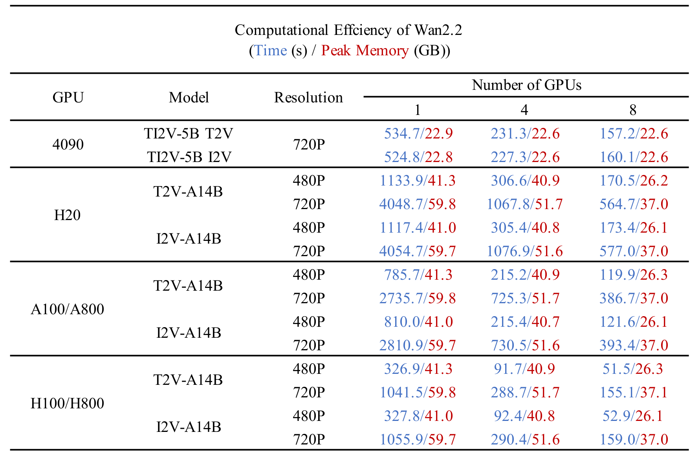
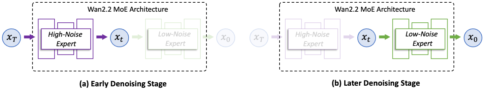

我把 Wan2.2 从跑不起来到跑通 720P，踩了这六个坑
Wan2.2 看着是个开源视频模型，实际本地部署和云端调用都有不少容易踩的细节。从分辨率对齐到显存调度、从水印控制到地域绑定，这篇把我踩过的坑一次性说清楚。
朋友给我推荐 Wan2.2 的时候说，这玩意儿开源、免费、能本地跑，比闭源模型香多了——它的官网上有完整的模型家族介绍和 demo 视频。我一听就来劲，下载完权重 python generate.py 一行命令跑起来。结果从下载到真正跑出一段没毛病的 5 秒视频，中间折腾了小一周。不是模型不行，是有些地方它就是没写在 README 显眼的位置，或者写了但你不会往那个方向想。
这篇把我踩过的几个坑挨个说——每个坑我当时都以为要重装或者放弃了，最后都是翻文档或者试错才救回来的。
坑一：分辨率直接用 1280×720，结果跑一半崩
我第一次跑 TI2V-5B 图生视频，参考图就是 720P 的，直接抄了网上一个命令里的 --size 1280*720。结果跑了大概两分钟，GPU 就报错退出了，日志里堆了一大串 shape mismatch。我以为权重文件下载坏了，重新下载一遍还是一样。后来去Wan2.2文档翻了一下才看到，TI2V-5B 的 VAE 压缩比是 4×32×32，高宽必须是 32 的倍数。720 不是 32 的倍数，所以用 704 才对。改成 --size 1280*704 立刻就通了。
这事儿说穿了就是对齐问题，但没人提醒你真想不到去查 VAE 压缩比。而且这个差异只在 TI2V-5B 上有，A14B 系列的规则不一样，别搞混。
坑二：24GB 显存居然也 OOM
我用的是 RTX 4090，24GB 显存，想当然以为跑 TI2V-5B 绰绰有余。结果第一次不加任何显存优化参数跑，跑到一半直接 OOM 退出。查官方给的参数，发现 TI2V-5B 在 4090 上必须加三个参数：--offload_model True（把模型部分权重卸载到 CPU）、--convert_model_dtype（bfloat16 比 float32 省一半显存）、--t5_cpu（把 T5 文本编码器放 CPU 跑）。三个参数一个都不能少，少一个就爆显存。
加上之后峰值显存大概在 22GB 左右，刚好卡在 24GB 以内。如果你显卡只有 16GB（比如 4060 Ti），那就得把分辨率降到 480P 再试，还不行只能找社区量化版本的权重。

坑三：百炼 API 跨地域调用，直接报错
本地调通之后我想试试云端 API，不用本地显卡的时候也能跑。在阿里云百炼控制台申请了 API Key，随便找了个 Endpoint URL 就调，结果接口直接返回错误码。翻了文档才发现：模型、Endpoint URL、API Key 三者必须属于同一个地域。我 API Key 是华北 2 的，Endpoint 却选了新加坡，肯定通不了。改对地域之后立刻就好了。
百炼现在有华北 2（北京）和新加坡两个主要地域，WorkspaceId 在业务空间详情页能查到，Endpoint URL 里要带上这个 ID。这事儿没在 quickstart 里加粗提醒，我试错了三次才对上。
坑四：想要无水印，别从控制台点
百炼的网页控制台体验确实方便，调 prompt 看效果很快，但有个问题：右下角强制有"AI 生成"水印，关不掉。我第一次用控制台调完效果觉得不错，想批量生成一批，结果发现批量也在控制台里，水印一样关不掉。后来才知道：水印控制只在 API 里，watermark 参数默认是 false，也就是无水印。控制台的水印是写死的。
所以如果你要做生产场景的素材、或者要自动化批量生成，必须走 DashScope API，别在控制台死磕。控制台适合快速试 prompt，真干活还是得 API。
坑五：图生视频空 prompt 跑出来像随机动起来
看到样本文档里说 I2V 模型可以完全不写 prompt，只靠参考图生成。我试了，视频确实能动，但动起来的感觉就是镜头瞎晃，完全不知道它想表达什么。原来"不写 prompt 也能生成"这句话有个隐含前提：最好配合 --use_prompt_extend 和 --prompt_extend_method dashscope，让 DashScope 里的视觉语言模型自动从参考图生成 prompt。空 prompt 等于你放弃了对运动方向和风格的所有控制权。
如果没有 DashScope API Key，至少写个简单的 prompt 告诉它怎么动，比如 "the waves gently rock it" 这种。完全空的话，效果真的看运气。
坑六：没有 80GB 显卡，别碰 A14B
一开始我看着 A14B-I2V 出的 demo 效果特别好，就从下载页面拉了 A14B 的权重，然后在 4090 上跑。结果不用说，直接 OOM。A14B 系列是 MoE 架构，需要 80GB 显存，4090 只有 24GB，光模型权重就放不下。Wan2.2 家族里，只有 TI2V-5B 能在消费级显卡上跑。这一点文档里有，但下载页面没写，我白下了两个小时的权重文件才发现。

防坑清单
把上面六个坑浓缩成几条能记的：
- 分辨率先对齐 VAE 压缩比：TI2V-5B 用 32 的倍数，1280×704 别写成 1280×720
- 单卡必加三个显存优化参数：
--offload_model True、--convert_model_dtype、--t5_cpu - 百炼三要素同地域：模型、Endpoint URL、API Key 必须同一个地域，别混着来
- 要无水印就走 API：控制台强制有水印，生产场景别在那浪费时间
- 图生视频别空 prompt：要么配合 DashScope 自动扩展，要么自己写一句运动描述
- 消费级显卡认准 TI2V-5B：A14B 和 S2V 都要 80GB，别白下载
知道这些坑之后，Wan2.2 其实相当省心。TI2V-5B 在 4090 上 720P 大概 9 分钟出一段 5 秒视频，效果够用来做电商产品动态、短视频开头封面、或者快速验证创意。本地模型完全免费、权重下完之后不用联网，这些都是闭源模型比不了的。
这套从权重下载、命令行参数调优到百炼 API 调用的完整资料，我在GitHub维护主仓库的同时，也在Gitee和GitCode各同步了一份，国内访问选 Gitee 或 GitCode 更快，看你习惯哪个。